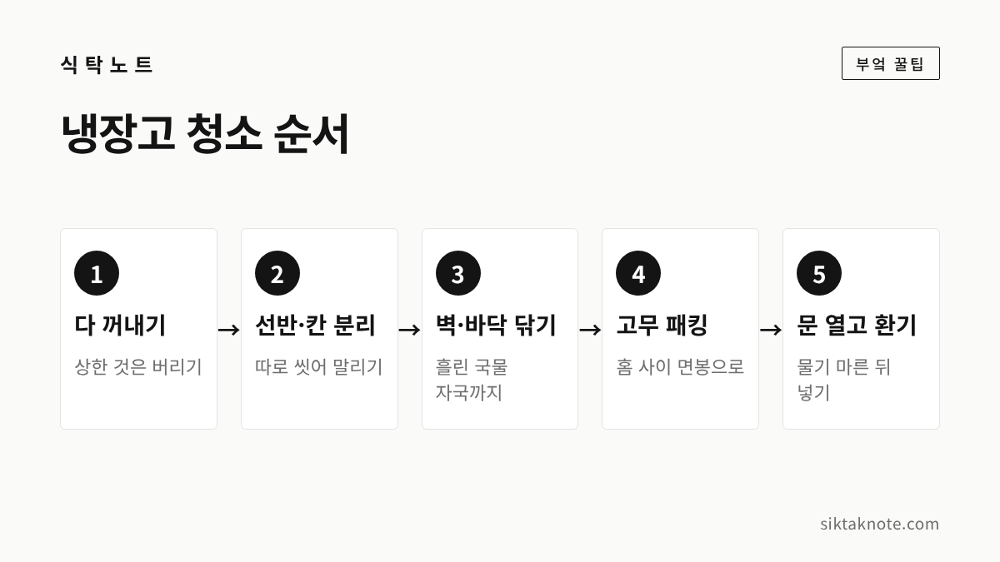
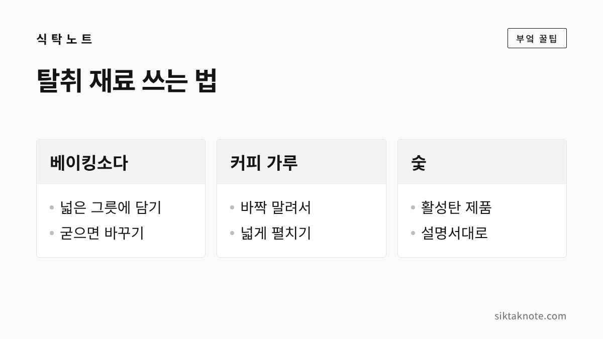

냉장고 냄새 없애는 법 — 원인 찾기, 청소 순서, 베이킹소다·커피 탈취

3줄 요약
- 냉장고 냄새는 상한 음식, 흘린 국물, 뚜껑 없이 둔 김치·생선에서 시작되는 경우가 많아요.
- 음식을 다 꺼내 버릴 것부터 버리고, 선반·벽·고무 패킹을 닦은 뒤 문을 열어 환기합니다.
- 베이킹소다나 커피·숯은 보조일 뿐이라, 밀폐 보관과 냉장 5℃ 이하 유지가 더 중요합니다.
냉장고 문을 열었는데 뭐라고 말하기 어려운 냄새가 훅 올라올 때가 있는데요. 이럴 때 탈취제부터 사서 넣기 쉽지만, 냄새의 원인이 안에 그대로 있으면 금방 다시 납니다. 원인을 먼저 찾아 치우고, 닦고, 그다음에 탈취를 생각하시는 게 순서입니다.
냄새는 어디서 시작될까요
냉장고가 스스로 냄새를 만드는 건 아니에요. 삼성전자서비스 안내를 보면, 넣어 둔 음식 냄새가 용기와 벽면, 선반에 조금씩 배었다가 시간이 지나며 섞여서 불쾌한 냄새가 된다고 합니다. 변질된 음식이나 넘친 국물 흔적도 주요 원인으로 꼽고 있고요.
집에서 자주 보이는 원인은 대략 이렇습니다.
- 안쪽 구석에서 잊힌 채 상해 가는 반찬이나 채소
- 선반 밑이나 채소칸 바닥에 흘러 말라붙은 국물, 고기 핏물
- 뚜껑을 덜 닫았거나 랩을 씌우지 않은 김치
- 포장을 뜯은 채 넣어 둔 생선, 젓갈, 건어물
- 오래돼서 냄새가 밴 반찬 용기
그래서 냄새가 나면 먼저 냉장고를 한 칸씩 비워 보시는 게 좋습니다. 생각보다 원인이 한두 가지로 좁혀지는 경우가 많거든요.

청소는 이 순서로 합니다

냄새가 꽤 심하다면 한 번은 제대로 비우고 닦는 게 빠릅니다. 꺼낸 음식 중 상하지 않은 것은 아이스박스나 김치냉장고에 잠시 옮겨 두세요.
- 음식을 모두 꺼내고, 상했거나 오래된 것은 이때 버립니다.
- 선반과 서랍, 칸막이를 빼서 따로 씻고 물기를 완전히 말려요.
- 안쪽 벽과 바닥, 문 안쪽 칸을 닦습니다. 선반 밑과 채소칸 바닥에 말라붙은 국물 자국을 특히 꼼꼼히 봐 주세요.
- 문 둘레의 고무 패킹을 닦아요(아래에서 자세히 이야기할게요).
- 문을 열어 두고 환기한 뒤, 물기가 다 마르면 음식을 다시 넣습니다.
닦을 때는 따뜻한 물에 베이킹소다를 푼 물을 써도 되는데요. 미국 농무부(USDA)도 냉장고 안쪽과 문, 고무 패킹을 따뜻한 물과 베이킹소다로 닦는 방법을 안내하고 있습니다. 다만 국내 제조사 안내에서는 물을 직접 뿌리거나 락스, 알코올, 아세톤, 시너 같은 것으로 닦으면 제품이 상하거나 색이 변할 수 있다고 하니, 우리 집 냉장고 설명서를 한 번 확인하시는 게 좋겠습니다. 삼성전자서비스는 냄새가 계속될 때 전원 플러그를 뽑고 내부를 닦은 뒤, 문을 연 채 2~3시간 환기하라고 안내합니다.

고무 패킹과 바닥 물기도 살펴보세요
냉장고 문 둘레의 고무 패킹은 홈이 접혀 있어서 국물이 튀거나 물기가 고이기 쉬운 곳이에요. 여기에 거뭇한 곰팡이가 피면 문을 열 때마다 냄새가 납니다.
삼성전자서비스는 고무 패킹을 중성세제 묻힌 행주로 닦고 홈 사이는 면봉으로 닦으라고 안내합니다. 곰팡이가 생겼다면 주방용 세제를 칫솔에 묻혀 닦으라고 하고요. 패킹이 찢어지거나 들떠서 문이 잘 안 닫힌다면 찬 공기가 새니, 서비스센터에 점검을 받아 보시는 게 좋습니다.
냉장실 바닥이나 선반에 물이 자주 고인다면 그 물기도 냄새의 원인이 될 수 있는데요. 문을 여닫을 때 들어온 습기가 이슬로 맺히는 경우가 많지만, 안쪽 물 빠지는 구멍(드레인)이 이물질이나 얼음으로 막혀도 물이 샐 수 있다고 합니다. 이슬 정도는 마른 수건으로 닦으면 되고, 물이 계속 새거나 냉장이 잘 안 된다면 제조사 서비스센터에 문의하세요.

베이킹소다·커피·숯, 이렇게 씁니다

청소를 마쳤는데도 냄새가 조금 남아 있다면 그때 탈취 재료를 써 볼 만합니다. 미국 농무부는 냄새가 남을 때 베이킹소다나 활성탄(숯), 갓 간 커피 가루를 넓은 쟁반에 담아 넣어 두는 방법을 소개하고 있는데요. 이때도 음식을 뺀 빈 냉장고를 2~3일 돌리는 방식이라, 하루 이틀 만에 냄새가 싹 사라진다고 기대하시면 실망하실 수 있습니다. 커피 가루를 쓰면 커피 냄새가 조금 남을 수 있지만, 닦고 헹구면 없어진다고 합니다.
집에서 쓰실 때는 이렇게 해 보세요.
- 베이킹소다: 뚜껑 없는 넓은 그릇에 펼쳐 담아 선반 한쪽에 둡니다. 표면이 굳으면 새것으로 바꿔 주세요.
- 커피 찌꺼기: 젖은 채로 넣으면 오히려 곰팡이가 필 수 있어요. 바짝 말린 뒤 넓게 펼쳐 담는 게 좋습니다.
- 숯: 시중에 파는 냉장고용 숯이나 활성탄 제품을 설명서대로 쓰시면 됩니다.
어느 것이든 냄새의 원인을 없애 주는 건 아니라는 점은 기억해 두세요. 삼성전자서비스도 탈취기가 있어도 냄새를 완전히 없앨 수는 없으니, 음식을 밀폐 용기에 담아 두는 게 가장 중요하다고 안내합니다. 냉장고에 탈취 필터가 달려 있다면 설명서에 적힌 교체 주기도 한 번 확인해 보세요.

냄새가 다시 배지 않게 보관하기
청소를 해도 보관 습관이 그대로면 냄새는 다시 돌아오는데요. 아래 몇 가지만 지켜도 훨씬 덜합니다.
- 김치와 반찬은 뚜껑을 꼭 닫아 둡니다. 김치는 윗면에 랩을 한 장 덮고 뚜껑을 닫으면 냄새가 덜 퍼져요.
- 생선, 고기, 건어물은 비닐로 싸거나 밀폐해서 넣습니다.
- 국물 있는 음식은 넘치지 않게 넉넉한 용기에 담아요.
- 남은 음식에는 날짜를 적어 두고, 오래된 것부터 정리합니다.
김치 냄새나 생선 비린내가 유난히 신경 쓰인다면, 처음부터 냄새가 덜 나게 다루는 방법을 정리한 생선 비린내 안 나게 손질하고 보관하는 법과 김치 군내 잡는 법도 함께 봐 두시면 좋겠습니다.

냉장고 온도와 채우는 양
냉장고 안이 충분히 차갑지 않으면 음식이 더 빨리 상하고, 그만큼 냄새도 잘 납니다. 식품의약품안전처는 냉장식품은 5℃ 이하, 냉동식품은 영하 18℃ 이하로 보관하라고 안내하는데요. 적정 온도를 지키려면 냉장고 전체 용량의 70% 이하로 채우는 게 바람직하다고 합니다.
- 냉장고를 꽉 채우면 찬 공기가 잘 돌지 않습니다.
- 문 쪽은 온도 변화가 커서, 금방 먹을 음식을 두는 자리로 쓰는 게 좋습니다.
- 오래 둘 식품은 밀봉해서 냉동실 안쪽에 넣으라는 게 식약처 안내입니다.
이럴 땐 어떻게 하나요
청소를 했는데도 냄새가 안 빠져요.
탈취 재료를 넣고 며칠 더 지켜보시고, 탈취 필터가 있다면 교체해 보세요. 미국 농무부 자료에서는 이렇게 해도 냄새가 안 빠지면 흘린 물이 단열재까지 스며들었을 수 있다고 설명하는데요. 이런 경우는 집에서 해결하기 어려우니 제조사 서비스센터에 문의하시는 게 좋겠습니다.
식초나 레몬을 넣어 두면 냄새가 없어지나요?
식초 물로 닦는 방법이 알려져 있긴 하지만, 넣어 두기만 해서 냄새가 없어진다는 근거는 찾지 못했습니다. 향이 다른 냄새를 잠시 덮는 정도로 생각하시는 게 좋겠습니다.
냉장고 냄새는 결국 안에 든 음식에서 나오는 경우가 대부분입니다. 가끔 한 번씩 칸을 비워 오래된 것을 정리하고, 흘린 자국을 바로 닦는 습관만 들여도 문을 열 때가 한결 편해질 것 같습니다.